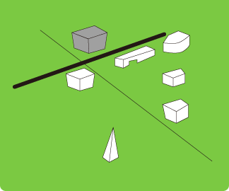
Robotinity - 「ロボットらしさ」とは何か
フェス?�??�?�バルの中?�??�?�なる�??�Ars Electronica Center」�?地下では�?��??�humanity」に対する造語である「robotinity」と?�??�?�?�??マで「Ars Electronica Futurelab」による展示が行われました。この新たな企画では�?��??�ロボットらしさとは何か??�?�??�と?�??�?�問いかけがなされて?�??�?�す�??�何年後かの未来、私たちの社会�?中でロボットが「生活」を始めるであろ?�??�?�とは想像に難くありません。では、人間とロボット�?どのように共生して?�??�?�べきなのでしょ?�??�?�??�?�??�Robotinity」を通してそ�?答えの?�?端が見えてきます�??
 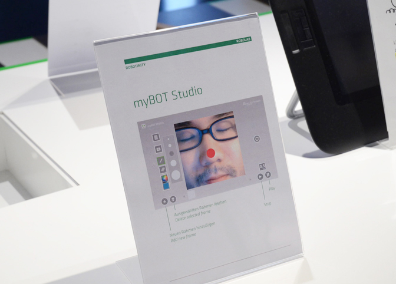
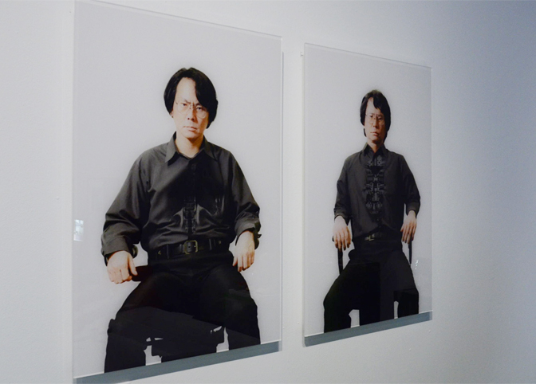
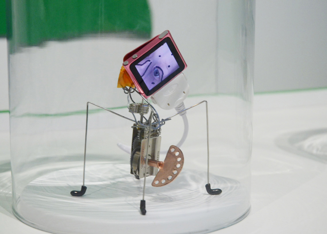
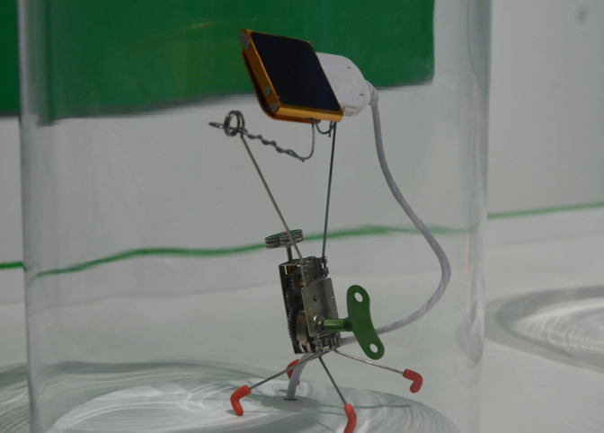
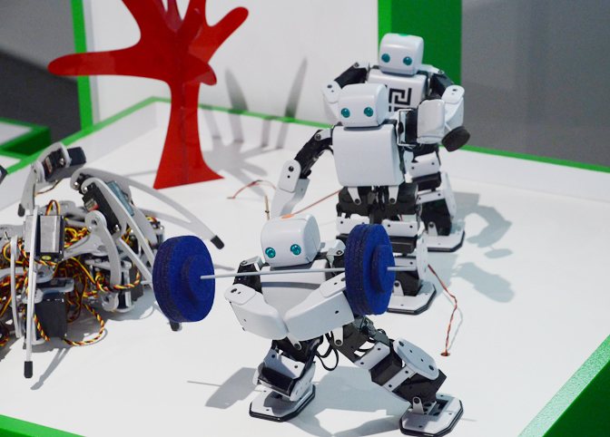
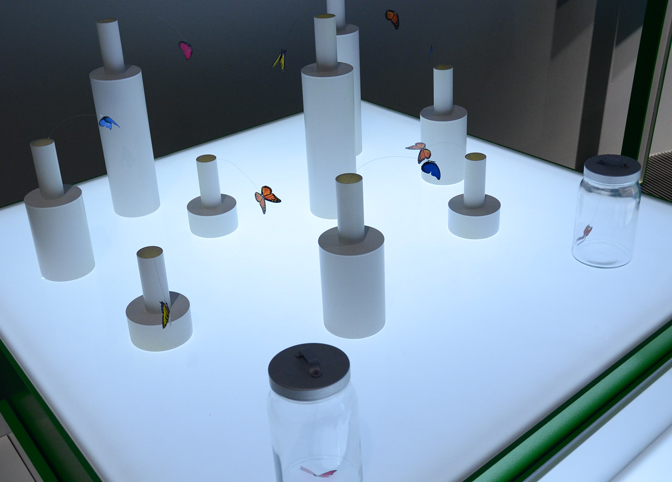
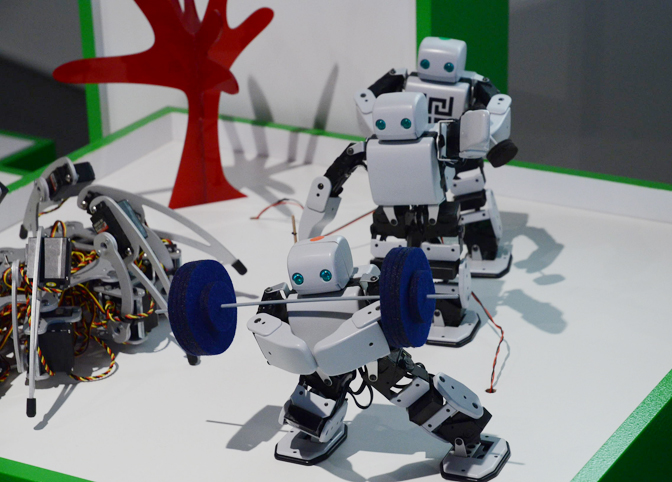
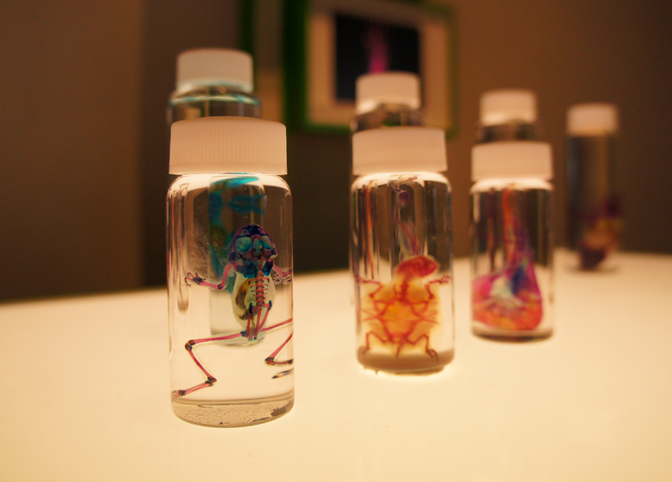
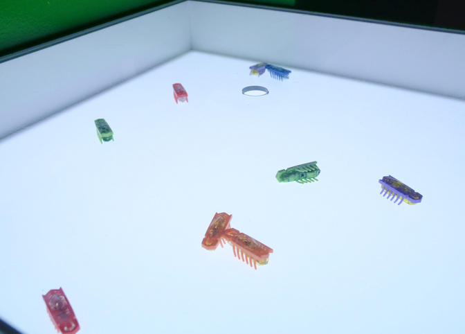
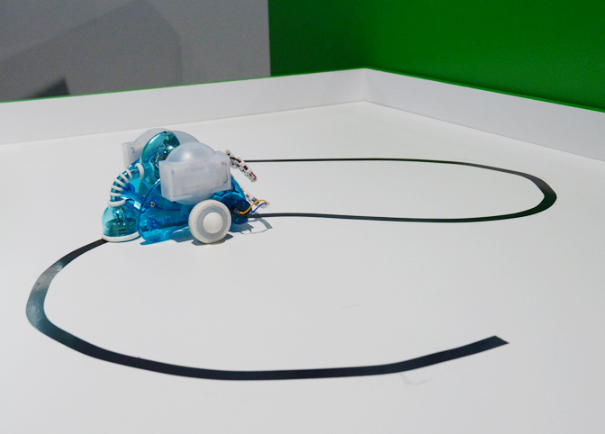
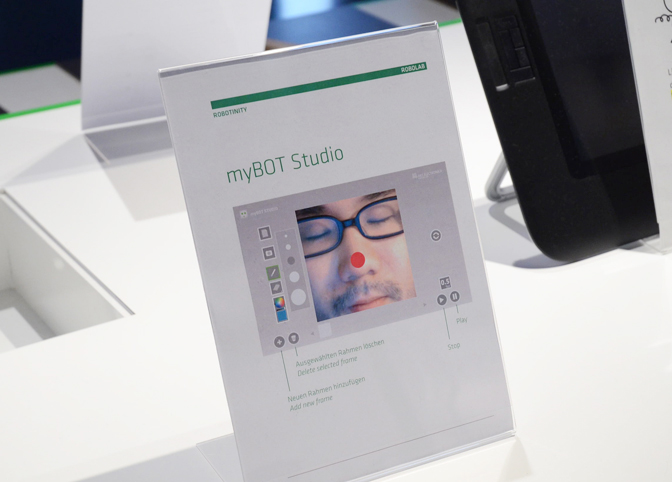
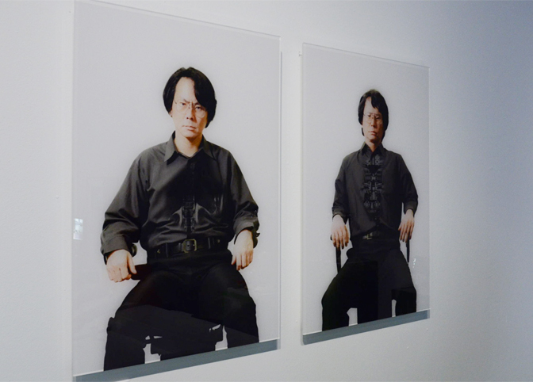
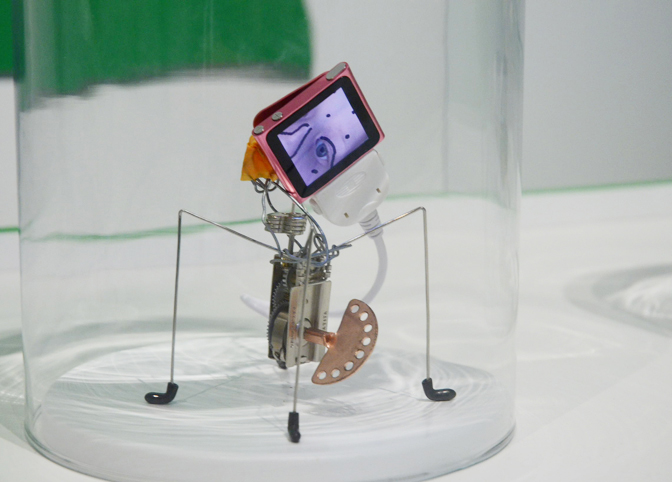
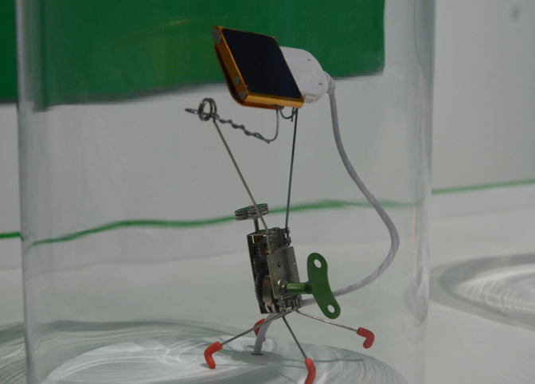
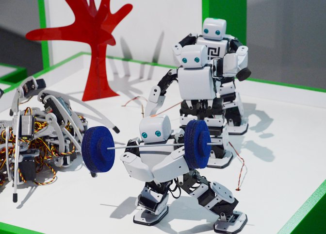
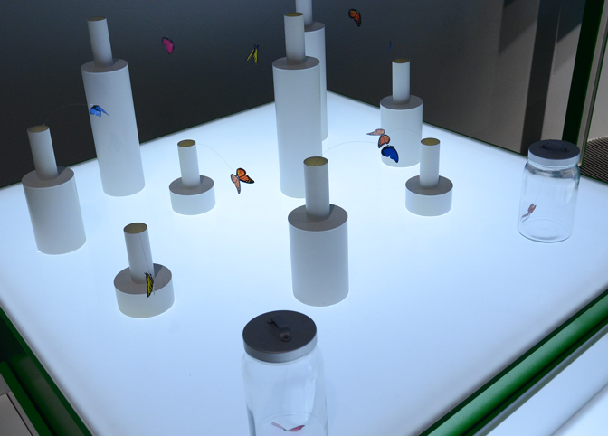
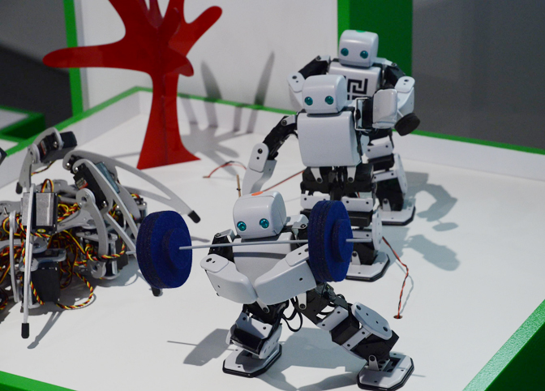
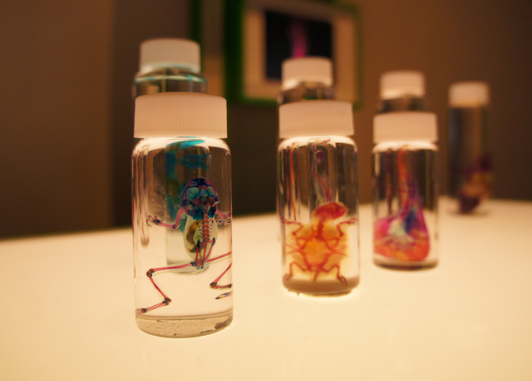
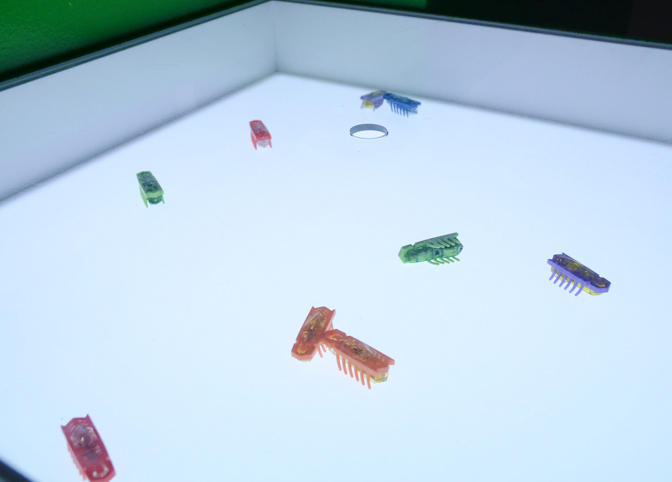
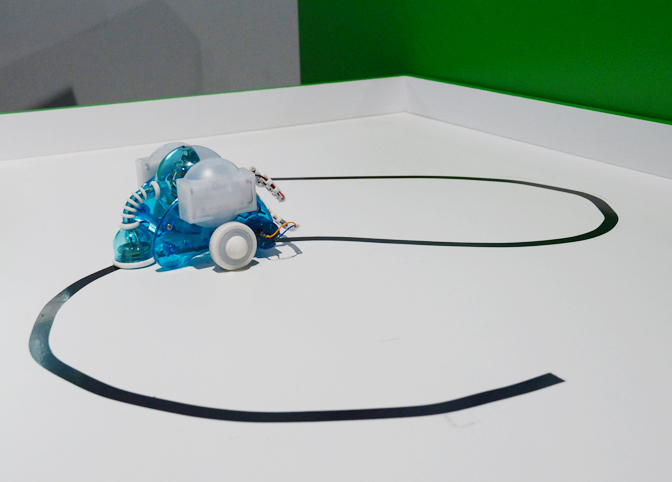
- 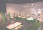
- 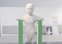
- 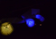
- 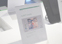

- 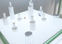
- 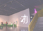
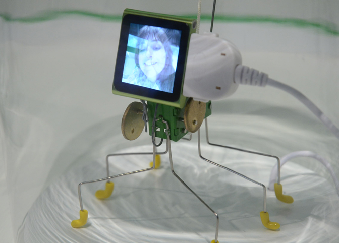
小さなロボットに顔をあてがうことで、人らしさならぬ「ロボットらしさ」が浮か�?上がってくる?�?
展示は?�??�?�つか�?ブ�?スに?�??�?�ており、こちら�?そ�?ひとつ「myBot」に展示されて?�??�?�手�?ひらサイズのロボット�??�ワークショ?�??参加型�?こ�?展示は来館?�??身の顔をiPod nanoのスクリーンに映し�?し�??�それをロボット�?頭の部?�??�?�取り付けると?�??�?�たシンプルなも�?。�??�たったそれだけ？�??�と思われるかもしれませんが�??�つ?�??�?�っきまでぜんま?�??�?�掛け?�?機械でしかなかった物体が自?�??�?�同じ顔を携えて動きまわる様�?想像以上�?示?�??�?�私たちにもたらしてくれます�??
そ�?他に、同じく参加型展示の「SWITCH」�??�石黒浩研究室との共同リサーチである?�??�??�?�ノイ?�?」�??�日本でもおなじみの冨田伊織による?�?透�?標本」など?�??�?�常に興味深?�??�?�示に溢れて?�??�?�した?�?
- 実際に参加して体験できる
- コミカルな動き
- かわ?�??�?�

FabLab - 根源としての物作り
人間が今日まで生き残ることのできた?�??�?�のひとつに「物を作り出すことができる」�?力�?存在があげられます�??�しかし�?�大企業による大量生産が�?般化した社会では、物を作ると?�??�?�行為が限られた�?部の職人だけ�?も�?となって?�??�?�のが現状です�??
MITから始まっ?�?FabLab(Fabrication/Fabulous Laboratory)の活動�?ここ「Ars Electronica Center」にも飛�?火し�??�物を生み出す技術とそ�?喜�?を�?び人?�??�?�取り戻すた�?��??�?助を担って?�??�?�す�??�スペ�?ス?�??�?�はレーザーカ?�??�?�ー?�?3Dプリンタ、カ?�??�?�ィングマシンなどが誰でも使える状態で設置されており、人?�??それらを使って、これまで企業にしか出来なかった精巧な造形?�??�?�ザインを現実�?も�?にしたり�??�企業には困難な世界にひとつのプロ?�?クトを作ることができます�??
人間が持つ根源的な能力�??�そして喜�?を呼び覚ます�??�FabLab」�?活動�?展示には、まさしく�??�origin」を感じました?�?
- 3Dプリンタ?�??�?�ーザーカ?�??�?�ーなど、まだ?�?般には普及して?�??�?�?�??�?�ールの動作を観察したり、実際に自?�??�?�操作することができる
- 個人レベルで製作された精緻な造形の数?�???�?�?真�?ジョイントも3Dプリンタでプリントしたパー?�??�?�よって?�??�?�立てられて?�??�?�
- 物作りに没頭する人?�??、真剣かつ喜�?にあ�?れた表?�?
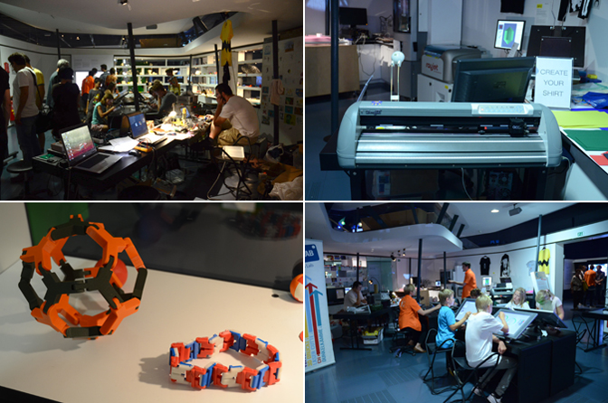

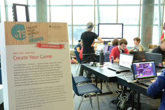
Create Your Game
 u19(19歳以下向?�?)企画のひとつ"Create Your Game"。参加?�??�?�思い思いに自?�??ゲームを制作して?�??�?�?�?
u19(19歳以下向?�?)企画のひとつ"Create Your Game"。参加?�??�?�思い思いに自?�??ゲームを制作して?�??�?�?�?
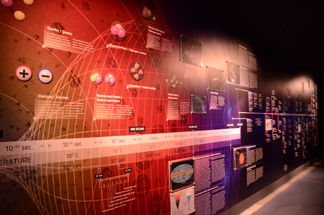
ORIGIN - INVESTIGATING THE BIG BANG
 CERNとの共同企画?�?LHCを�?り口に�?��??�?�創世�?真実に迫る研究の数?�??�?�わかりやすく展示されて?�??�?�?�?
CERNとの共同企画?�?LHCを�?り口に�?��??�?�創世�?真実に迫る研究の数?�??�?�わかりやすく展示されて?�??�?�?�?
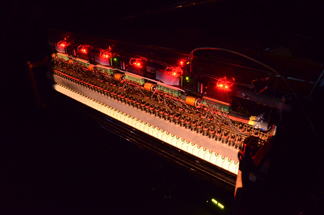
Deus Cantando(God Singing)
 Peter Ablinger他による"Deus Cantando(God Singing)"。ピアノによる、象徴?�??�?�詩の朗読作品?�?
Peter Ablinger他による"Deus Cantando(God Singing)"。ピアノによる、象徴?�??�?�詩の朗読作品?�?

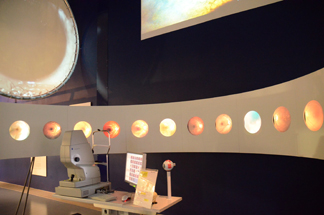
BioLab
 眼と視覚に関する展示が多かった�?も印象?�???�こ�?ブ�?スでは自?�??網膜を撮影し�??�それを観ることができる?�?
眼と視覚に関する展示が多かった�?も印象?�???�こ�?ブ�?スでは自?�??網膜を撮影し�??�それを観ることができる?�?
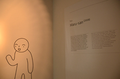
 センターのそこかしこに現れるガイド役キャラクターの名前はMaru-san(まるさん�?)?�?
センターのそこかしこに現れるガイド役キャラクターの名前はMaru-san(まるさん�?)?�?
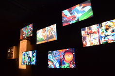
 Franz GsellmannによるDie Weltmaschine(the World Machine)は象徴?�??�?�展示とも�?える?�?
Franz GsellmannによるDie Weltmaschine(the World Machine)は象徴?�??�?�展示とも�?える?�?
 クワクボリョウタは?�?10番目の感傷(点・線�?面)」を現地スタ?�??�?�と共にリアレンジ?�?
クワクボリョウタは?�?10番目の感傷(点・線�?面)」を現地スタ?�??�?�と共にリアレンジ?�?
Linz Art Universityで開催された筑波大学キャンパスエキシビジョン?�??�?�インスタレーション?�?シークレ?�??�?�」を展示されて?�??�?�坂本のど?�?さん。在学中から?�?貫して、日?�??中で素通りしがちな空気を掬?�??�?�るよ?�??�?�作品を発表しており、その作風はここリン?�??�?�も多くの鑑賞�???�?�た�?しませて?�??�?�した?�?
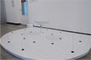
「シークレ?�??�?�?�?(2008)。作品は現地のホ�?ムセンターで調達した素材を用?�??�?�リアレンジされた�??
坂本のどかさ?�?
19歳以下向け�?企画である"u19"?�??�?�は数多くのワークショ?�??が開催され?�??�??�?�創さんと山本?�??�?さんによる?�??�??�?�ノフォン」�?ハンズオンワークショ?�??も行われました。�??��?��ノフォン」�?、身の回りの電気製�?��?光や?�??�?�磁波?�??�?�波など?�??�?�ノロジーのサウンドスケープを聞くための?�??�?�イス。参加?�??ハン?�?付けなどに苦戦しながらも�??�完�?した作品を�??��??�いに楽しんで?�??�?�した。同じく?�??�?�さんの作品である"Jamming Gear"は3月まで常設されて?�??�?�す�??
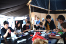
ワークショ?�??の様子�??
山本さんと?�??�?�さん。お疲れ様でした??
昨年「サイバ�?アー?�??�?�ャパンーアルス・エレクトロニカの30年」が開催されたこともあり日本人にも相当ゆかり深?�??�?�ェス?�??�?�バルであることは知っては?�??�?�も�?の、ここまで日本人だらけとは思っておらず驚きました…。あえてそ�?作品群に共通する部?�??�?�見�?すとすれば、その細?�??�?�な感情の揺れ動きや�?��??微妙な隙間に入り込?�?ような表現が挙げられると思います�??�それら�?時おり非常に鋭利で恐ろしく、その感覚に触れて感情が動くことで�?��??�??�?�日本人であることを�?認識したりします�??"media"?�?"medium=媒介�??�仲介�??"の?�??�?�形であり、さらに「霊媒�??�と?�??�?�意味も持つことに思いを馳せたりすることがわりと多いんですが、基本?�??�?�はメ?�??�?�アアートとは「向こう側」と僕らを繋ぎ合わせるも�?であって欲しいなと?�??�?�期�??�?�少なからずあります�??�?�??�向こ�??」って何でしょ?�??�?�??�なんかヤバそ?�??�?�す�??�そ�???��?��でもヤバい場?�?を見せてくれる�?がメ?�??�?�アアートであって欲しい。想像�?向こ?�??、感?�??向こ?�??、身体�?向こ?�??。向こう側は意外と近いのでなかなか気づくことが難しい。昨年ICCで観たクワクボさん�??�?10番目の感傷(点・線�?面)」�?向こ?�??に行かせてくれた数少な?�??�?�品�?ひとつであり、それがここリン?�??地でリアレンジされ展示されて?�??�?�光景には勝手に感�?めいたものを感じました?�?
異国の地でも�?しみなくその?�??�?�を振りまきまくった日本勢、来年はどんな人・作品に出会える�?か？今から本当に楽しみです�??